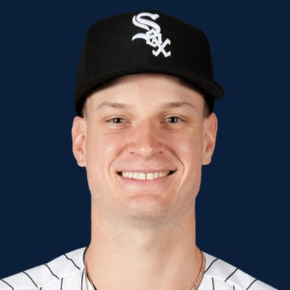

BASEBALLKEEP
Dynasty · Redraft · Diamond
Player File · SP CWS

Noah Schultz
#22 · SP · Chicago White Sox · age 22 · B/T LL · 6' 10" / 240 lbs · MLB debut 2026 · Naperville, USA
Pitching
| Year | G | GS | W | L | SV | HLD | IP | K | BB | HR | ERA | WHIP | K/9 |
|---|---|---|---|---|---|---|---|---|---|---|---|---|---|
| 2026 | 15 | 14 | 3 | 9 | 0 | 0 | 65.1 | 59 | 31 | 9 | 6.06 | 1.42 | 8.13 |
Plus
- Age 22 — still climbing the curve.
Minus
- 6.06 ERA is the 2026 tax. Dynasty can wait; redraft has to live with it.
- Keep #273 is the edge of the 300. Deep-league / taxi-squad more than a foundation chip.
BaseBallKeep Take
Noah Schultz is #273 on BaseBallKeep's overall dynasty 300, a 23-source mix anchored by RotoGraphs (Aug 14) and The Dynasty Guru points list (Aug 10). SP for CWS. Rest-of-season redraft #272. MLB since 2026. From Naperville / USA. Bats L, throws L.
BK Value on this rank is 49. Same decaying curve as football: 12,000 at 1.01, a late first a fraction of that. If someone is asking for two firsts, run the calculator. 2026 line: 6.06 ERA, 1.42 WHIP, 59 K in 65.1 IP.
The 23-board average is 275.0 on 2 lists that actually ranked him — unranked sources are skipped, never treated as 999. High 261, low 289.
Dynasty pays the next five years. Redraft pays September. If those two ranks diverge, that is the instruction: hold the kid or cash the veteran.
Flags fly forever. We will refresh this file with The Keep. September baseball is a proving ground, not a coronation.
Every Board
Spread 261–289 · 2 sources
| Source | Rank |
|---|---|
| RotoGraphs Model | 261 |
| TDG Points | 289 |
On The Keep nearby — Eduardo Quintero (#271) · Caden Scarborough (#272) · Gage Wood (#274) · Adley Rutschman (#275)
Same position on the 300 — Paul Skenes #5 · Jacob Misiorowski #7 · Tarik Skubal #12 · Cristopher Sánchez #16 · Garrett Crochet #18 · Yoshinobu Yamamoto #24
All players · The Keep · The Lineup · Pitchers · Calculator